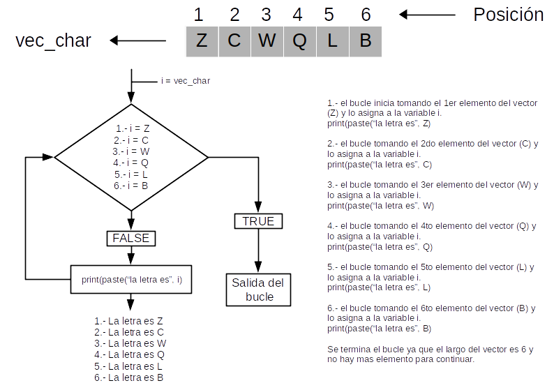
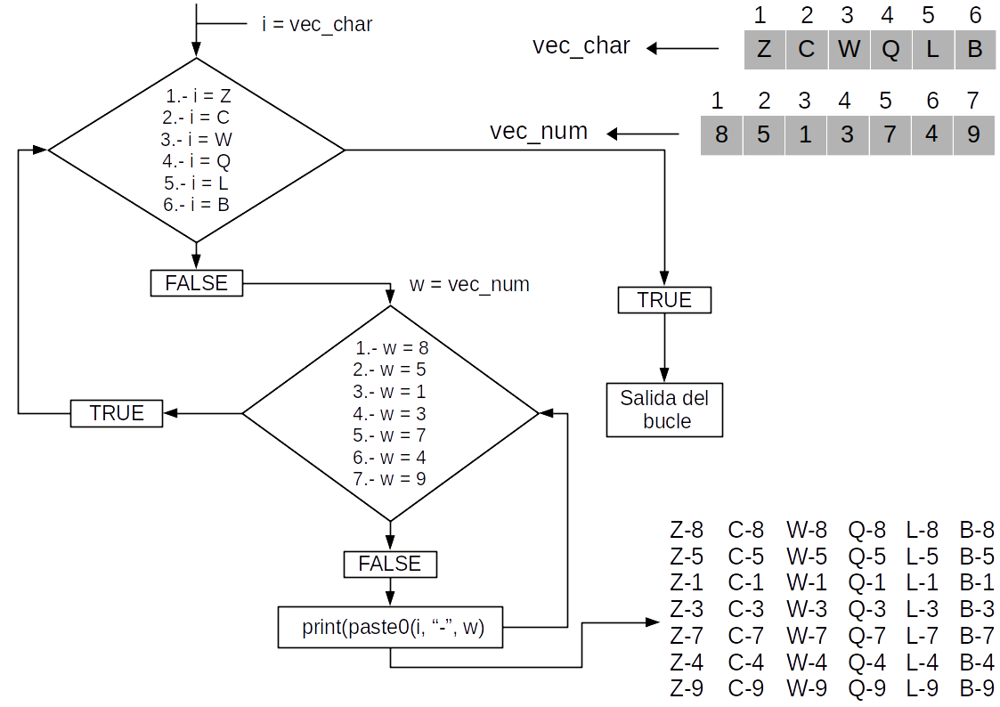

Bucle for
Un bucle es una instrucción que se repite hasta que se alcanza una condición específica. Puede haber una situación en la que necesite ejecutar un bloque de código varias veces. En R un bucle se puede utilizar para iterar sobre una lista, data frame, vector, matriz o cualquier otro objeto.
El bucle for se utiliza para repetir una o más instrucciones un determinado número de veces. De entre todos los bucles, el for se suele utilizar cuando sabemos el número de veces que queremos que se ejecute.
for (variable in vector) {
cuerpo (bloque de código)
}

## Imprimir los numeros de in vector
for (i in 1:10) {
print(i)
}
## Guardar los elemntos del vector en otra vector
for (i in 1:10) {
vect_num <- i
}
## Cada vez que corra el loop el vector de va a sobreescribir
## Para evitar eso hay que crear un vector vacio afuera del loop
vect_num <- vector()
for (i in 1:10) {
vect_num[i] <- i
}
## Crear un df con dos columnas, una para organismo y otra para saber que tipo es
df <- data.frame(orga = c("cactus", "helecho", "raton", "gato", "palma", "perro", "amanita"),
tipo = c("planta", "planta", "animal", "animal", "planta", "animal", "hongo"))
## Queremos saber el tipo de organismo que es cada observacion de la columna orga
## Utuilizamos el codigo de if else if else
## realizando un bucle for lo hacemos para cada observacion de la columna orga
for (w in 1:nrow(df)) {
if (df[w, 2] == "planta") { ## si la condicion es verdadera
print(paste(df[w, 1], "es una planta")) ## Es una planta
} else if (df[w, 2] == "animal") { ## si la condicion es falsa
print(paste(df[w, 1], "es una animal")) ## Es una animal
} else { ## si la condicion es falsa
print(paste(df[w, 1], "es una hongo")) ## Es una animal
}
}
Bucles anidados
La anidación de bucles es necesaria para hacer determinados procesamientos un poco más complejos que los que realiza un bucle simple. Un bucle anidado es cuando un bucle se encuentra en el bloque de instrucciones de otro bloque.
for (variable in vector) {
for (variable in vector) {
cuerpo (bloque de código)
}

Para realizar el siguiente ejemplo descargar el archivo Venta de Video Juegos, obtenido de la pagina https://www.kaggle.com/gregorut/videogamesales.
En el siguiente ejemplo tenemos una tabla con las estadísticas de ventas de videojuegos. Para mostrar cómo funciona un bucle for anidado voy a filtrar la tabla por Consola (Plataform) y por Género (Genre), después voy a guardar cada data frame creado en una carpeta para cada Consola y dentro de esta una carpeta una para el Género.
## Cargar el paquete dplyr
library(dplyr)
## Cargar la base de datos de la venta de videojuegos
games <- read.csv("../data/vgsales.csv")
## Creo un vector con las consolas de mi interes
consolas <- c("3DS", "DS", "GEN", "N64", "NES", "PC", "PS", "PS2", "PS3",
"PS4", "SNES", "Wii", "WiiU", "X360", "XB", "XOne")
## Crear el primer for loop para el vector de consolas
for (i in consolas) {
## Filtrar la columna Platform por consola y eliminar esa variable
consolas <- games %>%
filter(Platform == i) %>%
select(-Platform)
## Crear un vector con los generos de videojuegos para cada consola
genero <- levels(factor(consolas$Genre))
## Crear el segundo for loop para el vector de genero de videojuegos
for (w in genero) {
## Filtrar la columna Genre por genero y eliminar esa variable
genero_df <- consolas %>%
filter(Genre == w) %>%
select(-Genre)
## Crear una nueva carpeta para cada consola
dir.create(paste0("../data/", i), recursive = TRUE)
## Crear una nueva carpeta dentro cada cosola para los generos de videojuegos
dir.create(paste0("../data/", i, "/", w), recursive = TRUE)
## Guardar cada dataframe en su carpeta correspondiente
## Guardar cion el nombre consola_genero_Games.csv
write.csv(genero_df,
file = paste0("../data/", i, "/", w, "/", i, "_", w, "_Games.csv"),
row.names = FALSE)
}
}
Ejercicios Bucle for
Para realizar los ejercicios descargar los siguentes archivos: Ejercicios for